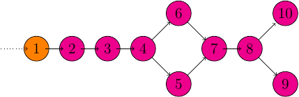

Real-Time Streaming with Apache Spark Streaming
Table of Contents
This is the second post in a series on real-time systems tangential to the Hadoop ecosystem. Last time, we talked about Apache Kafka and Apache Storm for use in a real-time processing engine. Today, we will be exploring Apache Spark (Streaming) as part of a real-time processing engine.
About Spark
Apache Spark is a general purpose, large-scale processing engine, recently fully inducted as an Apache project and is currently under very active development. As of this writing, Spark is at version 1.0.2 and 1.1 will be released some time soon.
Spark is intended to be a drop in replacement for Hadoop MapReduce providing the benefit of improved performance. Combining Spark with its related projects and libraries – Spark SQL (formerly Shark), Spark Streaming, Spark MLlib, GraphX, among others – and a very capable and promising processing stack emerges. Spark is capable of reading from HBase, Hive, Cassandra, and any HDFS data source. Not to mention the many external libraries that enable consuming data from many more sources, e.g., hooking Apache Kafka into Spark Streaming is trivial. Further, the Spark Streaming project provides the ability to continuously compute transformations on data.
Resilient Distributed Datasets
Apache Spark's primitive type is the Resilient Distributed Dataset (RDD). All
transformations, map, join, reduce, etc., in Spark revolve around this
type. RDD's can be created in one of three ways: parallelizing (distributing
a local dataset); reading a stable, external data source, such as an HDFS file;
or transformations on existing RDD's.
In Java, parallelizing may look like:
List<Integer> data = Arrays.asList(1, 2, 3, 4, 5); JavaRDD<Integer> distData = sc.parallelize(data);
Where sc defines the Spark context.
Similarly, reading a file from HDFS may look like:
JavaRDD<String> distFile = sc.textFile("hdfs:///data.txt");
The resiliency of RDD's comes from their lazy materialization and the information required to enable this lazy nature. RDD's are not always fully materialized but they do contain enough information (their linage) to be (re)created from a stable source Zaharia et al..
RDD's are distributed among the participating machines, and RDD transformations are coarse-grained – the same transformation will be applied to every element in an RDD. The number of partitions in an RDD is generally defined by the locality of the stable source, however, the user may control this number via repartitioning.
Another important property to mention, RDD's are actually immutable. This immutability can be illustrated with Spark's Word Count example:
JavaRDD<String> file = sc.textFile("hdfs:///data.txt"); JavaRDD<String> words = file.flatMap( new FlatMapFunction<String, String>() { public Iterable<String> call(String line) { return Arrays.asList(line.split(" ")); } } ); JavaPairRDD<String, Integer> pairs = words.map( new PairFunction<String, String, Integer>() { public Tuple2<String, Integer> call(String word) { return new Tuple2<String, Integer>(word, 1); } } ); JavaPairRDD<String, Integer> counts = pairs.reduceByKey( new Function2<Integer, Integer>() { public Integer call(Integer a, Integer b) { return a + b; } } ); counts.saveAsTextFile("hdfs:///data_counted.txt");
This is the canonical word count example, but here is a brief explanation: load
a file into an RDD, split the words into a new RDD, map the words into pairs
where each word is given a count (one), then reduce the counts of each word by
a key, in this case the word itself. Notice, each operation, map, flatMap,
reduceByKey, creates a new RDD.
To bring all these properties together, Resilient Distributed Datasets are read-only, lazy distributed sets of elements that can have a chain of transformations applied to them. They facilitate resiliency by storing lineage graphs of the transformations (to be) applied and they parallelize the computations by partitioning the data among the participating machines.
Discretized Streams
Moving to Spark Streaming, the primitive is still RDD's. However, there is another type for encapsulating a continuous stream of data: Discretized Streams or DStreams. DStreams are defined as sequences of RDD's. A DStream is created from an input source, such as Apache Kafka, or from the transformation of another DStream.
Turns out, programming against DStreams is very similar to programming against RDD's. The same word count code can be slightly modified to create a streaming word counter:
JavaReceiverInputDStream<String> lines = ssc.socketTextStream("localhost", 9999); JavaDStream<String> words = lines.flatMap( new FlatMapFunction<String, String>() { public Iterable<String> call(String line) { return Arrays.asList(line.split(" ")); } } ); JavaPairDStream<String, Integer> pairs = words.map( new PairFunction<String, String, Integer>() { public Tuple2<String, Integer> call(String word) { return new Tuple2<String, Integer>(word, 1); } } ); JavaPairDStream<String, Integer> counts = pairs.reduceByKey( new Function2<Integer, Integer>() { public Integer call(Integer a, Integer b) { return a + b; } } ); counts.print();
Notice, really the only change between first example's code is the return types. In the streaming context, transformations are working on streams of RDD's, Spark handles applying the functions (that work against data in the RDD's) to the RDD's in the current batch/ DStream.
Though programming against DStreams is similar, there are indeed some differences as well. Chiefly, DStreams also have statefull transformations. These include sharing state between batches/ intervals and modifying the current frame when aggregating over a sliding window.
The key idea is to treat streaming as a series of short batch jobs, and bring down the latency of these jobs as much as possible. This brings many of the benefits of batch processing models to stream processing, including clear consistency semantics and a new parallel recovery technique… Zaharia et al.
Hadoop Requirements
Running Spark Applications
Apache Spark applications can run in standalone mode or be managed by YARN(Running Spark on YARN), Mesos(Running Spark on Mesos), and even EC2(Running Spark on EC2). Furthermore, if running under YARN or Mesos, Spark does not need to be installed to work. That is, Spark code can execute on YARN and Mesos clusters without change to the cluster.
Language Support
Initial Thoughts
Getting away from the idea of directed acyclic graphs (DAG's) is – may be – both a bit of a leap and a benefit. Although it is perfectly acceptable to define Spark's transformations altogether as a DAG, this can feel awkward when developing Spark applications. Describing the transformations as Monadic feels much more natural. Of course, a monad structure fits the DAG analogy quite well, especially when considered in some of the physical analogies such as assembly lines.
Java's, and consequently Spark's, type strictness was an initial hurdle to get accustomed. But overall, this is good. It means the compiler will catch a lot of issues with transformations early.
Depending on Scala's Tuple[\d] classes feels second-class, but this is
only a minor tedium. It's too bad current versions of Java don't have
good classes for this common structure.
YARN and Mesos integration is a very nice benefit as it allows full stack analytics to not oversubscribe clusters. Furthermore, it gives the ability to add to existing infrastructure without overloading the developers and the system administrators with yet another computational suite and/or resource manager.
On the negative side of things, dependency hell can creep into Spark projects. Your project and Spark (and possibly Spark's dependencies) may depend on a common artifact. If the versions don't converge, many subtle problems can emerge. There is an experimental configuration option to help alleviate this problem, however, for me, it caused more problems than solved.
Test Project: Twitter Stream Sentiment Analysis
To really test Spark (Streaming), a Twitter Sentiment Analysis project was developed. It's almost a direct port of the Storm code. Though there is an external library for hooking Spark directly into Twitter, Kafka is used so a more precise comparison of Spark and Storm can be made.
When the processing is finished, the data are written to HDFS and posted to a simple NodeJS application.
Setup
The setup is the same as
last
time: 5 node Vagrant virtual cluster with each node running 64 bit
CentOS 6.5, given 1 core, and 1024MB of RAM. Every node is running HDFS
(datanode), YARN worker nodes (nodemanager), ZooKeeper, and Kafka. The
first node, node0, is the namenode and resource manager. node0 is
also running a Docker container with a NodeJS
application for reporting purposes.
Application Overview
This project follows a very similar process structure as the Storm Topology from last time.

However, each node in the above graph is actually a transformation on the current DStream and not an individual process (or group of processes).
This test project similarly uses the same simple Kafka producer developed. This Kafka producer will be how data are ingested by the system.
Kafka Receiver Stream
The data processed is received from a Kafka Stream and is implemented via the external Kafka library. This process simply creates a connection to the Kafka broker(s), consuming messages from the given set of topics.
Twitter Data JSON Parsing
As was the case last time, the important parts (tweet ID, tweet text, and language code) need to be extracted from the JSON. Furthermore, this project only parses English tweets. Non-English tweets are filtered out at this stage.
Filtering and Stemming
Many tweets contain messy or otherwise unnecessary characters and punctuation that can be safely ignored. Moreover, there may also be many common words that cannot be reliably scored either positively or negatively. At this stage, these symbols and stop words should be filtered.
Classifiers
Both the Positive classifier and the Negative classifier are in separate
map transformations. The implementation of both follows the
Bag-of-words model.
Joining and Scoring
Because the classifiers are done separately and a join is contrived, the next step is to join the classifier scores together and actually declare a winner. It turns out this is quite trivial to do in Spark.
Reporting: HDFS and HTTP POST
Finally, once the tweets are joined and scored, the scores need to be reported. This is accomplished by writing the final tuples to HDFS and posting a JSON object of the tuple to a simple NodeJS application.
This process turned out to not be as awkward as was the case with Storm.
The foreachRDD function of DStreams is a natural way to do side-effect
inducing operations that don't necessarily transform the data.
Implementing the Kafka Producer
See the post from last time for the details of the Kafka producer; this has not changed.
Implementing the Spark Streaming Application
Diving into the code, here are some of the primary aspects of this project. The full source of this test application can be found on Github.
Creating Spark Context, Wiring Transformation Chain
The Spark context, the data source, and the transformations need to be defined. Proceeding, the context needs to be started. This is all accomplished with the following code:
SparkConf conf = new SparkConf() .setAppName("Twitter Sentiment Analysis"); if (args.length > 0) conf.setMaster(args[0]); else conf.setMaster("local[2]"); JavaStreamingContext ssc = new JavaStreamingContext( conf, new Duration(2000)); Map<String, Integer> topicMap = new HashMap<String, Integer>(); topicMap.put(KAFKA_TOPIC, KAFKA_PARALLELIZATION); JavaPairReceiverInputDStream<String, String> messages = KafkaUtils.createStream( ssc, Properties.getString("rts.spark.zkhosts"), "twitter.sentimentanalysis.kafka", topicMap); JavaDStream<String> json = messages.map( new Function<Tuple2<String, String>, String>() { public String call(Tuple2<String, String> message) { return message._2(); } } ); JavaPairDStream<Long, String> tweets = json.mapToPair( new TwitterFilterFunction()); JavaPairDStream<Long, String> filtered = tweets.filter( new Function<Tuple2<Long, String>, Boolean>() { public Boolean call(Tuple2<Long, String> tweet) { return tweet != null; } } ); JavaDStream<Tuple2<Long, String>> tweetsFiltered = filtered.map( new TextFilterFunction()); tweetsFiltered = tweetsFiltered.map( new StemmingFunction()); JavaPairDStream<Tuple2<Long, String>, Float> positiveTweets = tweetsFiltered.mapToPair(new PositiveScoreFunction()); JavaPairDStream<Tuple2<Long, String>, Float> negativeTweets = tweetsFiltered.mapToPair(new NegativeScoreFunction()); JavaPairDStream<Tuple2<Long, String>, Tuple2<Float, Float>> joined = positiveTweets.join(negativeTweets); JavaDStream<Tuple4<Long, String, Float, Float>> scoredTweets = joined.map(new Function<Tuple2<Tuple2<Long, String>, Tuple2<Float, Float>>, Tuple4<Long, String, Float, Float>>() { public Tuple4<Long, String, Float, Float> call( Tuple2<Tuple2<Long, String>, Tuple2<Float, Float>> tweet) { return new Tuple4<Long, String, Float, Float>( tweet._1()._1(), tweet._1()._2(), tweet._2()._1(), tweet._2()._2()); } }); JavaDStream<Tuple5<Long, String, Float, Float, String>> result = scoredTweets.map(new ScoreTweetsFunction()); result.foreachRDD(new FileWriter()); result.foreachRDD(new HTTPNotifierFunction()); ssc.start(); ssc.awaitTermination();
Some of the more trivial transforms are defined in-line. The others are defined in their respective files.
Twitter Data Filter / Parser
Parsing Twitter JSON data is one of the first transformations and is accomplished with help of the JacksonXML Databind library.
JsonNode root = mapper.readValue(tweet, JsonNode.class); long id; String text; if (root.get("lang") != null && "en".equals(root.get("lang").textValue())) { if (root.get("id") != null && root.get("text") != null) { id = root.get("id").longValue(); text = root.get("text").textValue(); return new Tuple2<Long, String>(id, text); } return null; } return null;
The mapper (ObjectMapper) object is defined at the class level so it is not
recreated for each RDD in the DStream, a minor optimization.
You may recall, this is essentially the same code as last time. The only difference really is that the tuple is returned instead of being emitted. Because certain situations (e.g., non-English tweet, malformed tweet) return null, the nulls will need to be filtered out. Thankfully, Spark provides a simple way to accomplish this:
JavaPairDStream<Long, String> filtered = tweets.filter( new Function<Tuple2<Long, String>, Boolean>() { public Boolean call(Tuple2<Long, String> tweet) { return tweet != null; } } );
Text Filtering
As mentioned before, punctuation and other symbols are simply discarded as they provide little to no benefit to the classifiers:
String text = tweet._2(); text = text.replaceAll("[^a-zA-Z\\s]", "").trim().toLowerCase(); return new Tuple2<Long, String>(tweet._1(), text);
Similarly, common words should be discarded as well:
String text = tweet._2(); List<String> stopWords = StopWords.getWords(); for (String word : stopWords) { text = text.replaceAll("\\b" + word + "\\b", ""); } return new Tuple2<Long, String>(tweet._1(), text);
Positive and Negative Scoring
Each classifier is defined in its own class. Both classifiers are very similar in definition.
The positive classifier is primarily defined by:
String text = tweet._2(); Set<String> posWords = PositiveWords.getWords(); String[] words = text.split(" "); int numWords = words.length; int numPosWords = 0; for (String word : words) { if (posWords.contains(word)) numPosWords++; } return new Tuple2<Tuple2<Long, String>, Float>( new Tuple2<Long, String>(tweet._1(), tweet._2()), (float) numPosWords / numWords );
And the negative classifier:
String text = tweet._2(); Set<String> negWords = NegativeWords.getWords(); String[] words = text.split(" "); int numWords = words.length; int numPosWords = 0; for (String word : words) { if (negWords.contains(word)) numPosWords++; } return new Tuple2<Tuple2<Long, String>, Float>( new Tuple2<Long, String>(tweet._1(), tweet._2()), (float) numPosWords / numWords );
Because both are implementing a PairFunction, a join situation is contrived.
However, this could easily be defined differently such that one classifier is
computed, then the next, without ever needing to join the two together.
Joining
It turns out, joining in Spark is very easy to accomplish. So easy in fact, it can be handled without virtually any code:
JavaPairDStream<Tuple2<Long, String>, Tuple2<Float, Float>> joined = positiveTweets.join(negativeTweets);
But because working with a Tuple of nested tuples seems unwieldy, transform it to a 4 element tuple:
public Tuple4<Long, String, Float, Float> call( Tuple2<Tuple2<Long, String>, Tuple2<Float, Float>> tweet) { return new Tuple4<Long, String, Float, Float>( tweet._1()._1(), tweet._1()._2(), tweet._2()._1(), tweet._2()._2()); }
Scoring: Declaring Winning Class
Declaring the winning class is a matter of a simple map, comparing each class's score and take the greatest:
String score; if (tweet._3() >= tweet._4()) score = "positive"; else score = "negative"; return new Tuple5<Long, String, Float, Float, String>( tweet._1(), tweet._2(), tweet._3(), tweet._4(), score);
This declarer is more optimistic about the neutral case but is otherwise very straightforward.
Reporting the Results
Finally, the pipeline completes with writing the results to HDFS:
if (rdd.count() <= 0) return null; String path = Properties.getString("rts.spark.hdfs_output_file") + "_" + time.milliseconds(); rdd.saveAsTextFile(path);
And sending POST request to a NodeJS application:
rdd.foreach(new SendPostFunction());
Where SendPostFunction is primarily given by:
String webserver = Properties.getString("rts.spark.webserv"); HttpClient client = new DefaultHttpClient(); HttpPost post = new HttpPost(webserver); String content = String.format( "{\"id\": \"%d\", " + "\"text\": \"%s\", " + "\"pos\": \"%f\", " + "\"neg\": \"%f\", " + "\"score\": \"%s\" }", tweet._1(), tweet._2(), tweet._3(), tweet._4(), tweet._5()); try { post.setEntity(new StringEntity(content)); HttpResponse response = client.execute(post); org.apache.http.util.EntityUtils.consume(response.getEntity()); } catch (Exception ex) { Logger LOG = Logger.getLogger(this.getClass()); LOG.error("exception thrown while attempting to post", ex); LOG.trace(null, ex); }
Each file written to HDFS will have data in it, but the data written will be small. A better batching procedure should be implemented so the files written match the HDFS block size.
Similarly, a POST request is opened for each scored tweet. This can be expensive on both the Spark Streaming batch timings and the web server receiving the requests. Batching here could similarly improve overall performance of the system.
That said, writing these side-effects this way fits very naturally into the Spark programming style.
Summary
Apache Spark, in combination with Apache Kafka, has some amazing potential. And not only in the Streaming context, but as a drop-in replacement for traditional Hadoop MapReduce. This combination makes it a very good candidate for a part in an analytics engine.
Stay tuned, as the next post will be a more in-depth comparison between Apache Spark and Apache Storm.
Related Links / References
- Apache Spark
- State of Apache Spark 2014
- Storm Sample Project
- SPARK-939
- Apache Spark
- Real-Time Streaming with Apache Storm and Apache Kafka
- Docker IO Project Page
- Amazon S3
- Network File System (NFS)
- Hadoop YARN
- Apache Mesos
- Spark Streaming Programming Guide
- Monad
- Spark SQL
- Spark Streaming
- MLlib
- GraphX
- Spark Standalone Mode
- Running on YARN
- Running on Mesos
- Fight Dependency Hell in Maven
- Simple Kafka Producer
- Spark: External Kafka Library
- Spark Sample Project
- Wikipedia: Bag-of-words
- Jackson XML Databind Project
- Spark Programming Guide
- Amazon EC2
- Running Spark on EC2
- Spark FAQ
- Future of Shark
- Resilient Distributed Datasets: A Fault-Tolerant Abstraction for In-Memory Cluster Computing (PDF)
- Discretized Streams: An Efficient and Fault-Tolerant Model for Stream Processing on Large Clusters (PDF)
- Wikipedia: Lazy evaluation
- Wikipedia: Data Parallelism